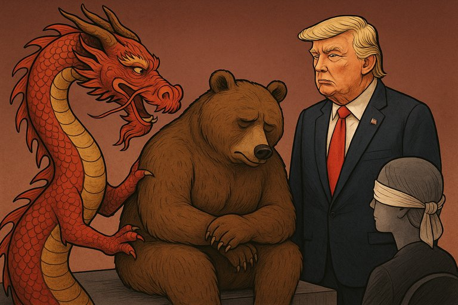

Publicado em 2025-07-05 09:52:04
“Não queremos que Moscovo perca.”
Disse a China — com um leque de jade numa mão… e a faca do comércio global na outra.
Oh, nobre diplomacia chinesa!
Tu, que brilhas como uma lanterna vermelha sobre o pântano da política internacional,
Vens agora à ribalta para nos brindar com a tua lógica de jade e chumbo:
"A Rússia não pode perder."
Não porque sejas amiga do povo russo,
Nem por amores ucranianos — que não tens.
Mas porque, se o urso cair, o Ocidente dançará sobre os escombros,
E tu, dragão de olhos semicerrados, perderás o teu cão de guerra predilecto.
Enquanto o povo ucraniano se desfaz em trincheiras,
Enquanto os corpos dos soldados viram lama,
Pequim joga bilhar com as esferas da diplomacia:
— Uma tacada na Rússia,
— Uma piscadela à Europa,
— Um contrato com o Irão,
— Um sussurro ao ouvido do novo presidente americano,
— E uma conferência sobre “paz e estabilidade no mundo multipolar”.
Sim, porque o trono de Washington já não está ocupado por um velho titubeante…
Mas por um velho histriónico,
Donald Trump,
O messias do “America First”,
O apóstolo dos negócios obscuros,
O homem que sorri a ditadores e chuta democratas para debaixo do tapete de Mar-a-Lago.
Que importa a Ucrânia, se há negócios por fechar?
Que importa a NATO, se o Putin telefona?
Que importa a verdade, se a audiência gosta mais de um tweet do que de um tratado?
Com Trump no poder, a bússola moral do Ocidente virou brinquedo de criança.
E a guerra?
É apenas mais um episódio no reality show global,
Com explosões no prime-time e silêncio absoluto nos bastidores.
"Cuidado com quem te vende um muro…
…e depois te obriga a pagá-lo em yuan."
O mundo não é um jogo de xadrez.
É um circo de três pistas, com ursos amestrados, dragões fumegantes
e um palhaço laranja a comandar o espetáculo.
O público? Aplaude. Bate palmas.
E volta sempre para mais.
E nós,
Tu, eu,
Todos os que ainda pensam com lucidez,
Continuamos a pagar —
Com sanidade, com silêncio, com impotência.
Pagamos a conta de um jantar que nunca pedimos,
Servido por monstros
Com guardanapos ensanguentados.
Artigo de Augustus Veritas
"Enquanto os mísseis rasgam céus alheios e os corpos se misturam à lama das fronteiras, o dragão sussurra ao urso que não pode cair — não por amizade, mas por estratégia. Do outro lado do palco, Trump, com o olhar de quem confunde mapas com tabuleiros de Monopoly, acena ao dragão se este prometer negócios sem clima, nem ética. E a Europa? Sentada, de olhos vendados, como uma senhora antiga que prefere não ver para não ter de agir. O mundo dança, mas o som é de bombas."